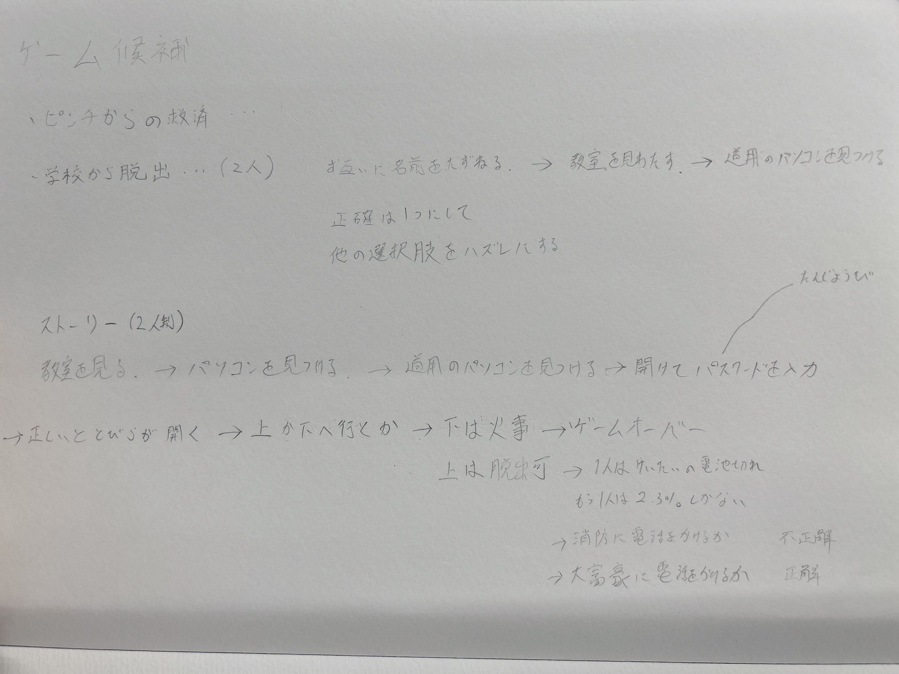

2022/10/28
★脱出ゲーム★
私たちの班はストーリー形式の脱出ゲームをつくることにしました。
ストーリーボード

ソースコード
- from os import name
- from re import A
- from select import select
- name=input("あなたのお名前は？")
- while(True):
- print("あなたは横浜の大学に通う1年生。3007でデザイン演習を受けていた。"
- "授業中に眠ってしまい起きたら夜の10時。"
- "学校は既に閉まっており扉は開かない。"
- "幸いにも閉じ込められていたのはもう一人いた。一緒に協力して脱出しよう！！")
- select=int(input("脱出する為に選択肢1~3を選んでね!"
- "1.教室を見渡す"
- "2.電気を付ける"
- "3.ドアを無理矢理開ける"))
- if select==1:
- print("正解 次の選択肢に進んでね")
- break
- elif select==2:
- print("意味ないよ はじめからやり直し")
- continue
- elif select==3:
- print("警報が作動したよ はじめからやり直し")
- continue
- while(True):
- select=int(input("道用先生のパソコンがあったよ。"
- "「ミッション！ パソコンのパスワードを解除し出口の扉を解除せよ！」"
- "パスワードの選択肢1~3を選んでね!"
- "1.1129（誕生日）"
- "2.3062（昨日の食材費）"
- "3.1949（神奈川大学の創立年）"))
- if select==2:
- print("正解 次の選択肢に進んでね")
- break
- elif select==1:
- print("入力制限がかかったよ はじめからやり直し")
- continue
- elif select==3:
- print("入力制限がかかったよ はじめからやり直し")
- continue
- while(True):
- select=int(input("扉が開いたよ。"
- "さぁどこへ行く？"
- "行くところの選択肢1~3を選んでね!"
- "1.1階へ降りる"
- "2.7階へ昇る"
- "3.21階へ昇る"))
- if select==2:
- print("正解 次の選択肢に進んでね")
- break
- elif select==1:
- print("どの扉も開かない はじめからやり直し")
- continue
- elif select==3:
- print("外への出口がない はじめからやり直し")
- continue
- while(True):
- select=int(input("7階のテラスへ出ることができた。"
- "最後の問題だよ。"
- "一緒に脱出している子からヘリを呼ぼうと言われた。"
- "ただし、電話をかけるのはあなた。"
- "さぁ、どこへかける？"
- "1.消防署にかける"
- "2.大富豪にかける"
- "3.警察署にかける"))
- if select==2:
- print("正解")
- break
- elif select==1:
- print("不正解 ゲームオーバー")
- continue
- elif select==3:
- print("不正解 ゲームオーバー")
- continue
- while(True):
- select=int(input("ヘリで脱出成功。"
- "ゲームクリア。お疲れ様"))
-
まとめ・感想
内容は至って簡単なのにストーリーを考えたり、コードでエラーが起こった際にやり直したりと普段からやっていない事に取り組んだので
とても苦労した。私たちが普段やっているゲームには到底追いつけないと感じた。
今回は授業中に習わなかったwholeとcontinueを使って間違えたら戻るという処理を利用して思い通りのゲームを作ることができた。
ファブラボで道用先生に教えてもらわなかったら理想通りにならなかった気がする。
間違えたらやり直しの処理はリストを使っても同じような事ができると知ったのでやってみたいと思う。
備考・授業のまとめ
- #ageという変数に44を代入している
- age=44
- if waist>=85: #数字の後ろにコロンを入れてEnterを押しTabでずらしてからprintと入れる事が大切
- if waist>=85 and age>=40:#この部分が変更 #論理記号を用いて条件付けしていく
- for i in range(1,4): #コロンが入っていることに注意
- print(i,"人目") #タブでずらしていることに注意！
- # 出力結果
- # 0 人目
- # 1 人目
- # 2 人目
- name=input("名前を教えて下さい")
- waist=float(input("腹囲は？"))
- age=int(input("年齢は？"))
- print(name, "さんは腹囲", waist, "cmで年齢は",age, "才ですね。")
- if waist>=85 and age>=40:#この部分が変更 #論理記号を用いて条件付けしていく
- print(name,"さん、内臓脂肪蓄積注意です")
- else:
- print(name,"さん、腹囲は問題ありません")
-
- #整数に変換したい場合-----------> int()
- #小数点もある数に変換したい場合---> float()を使うとエラーにならなくなる
デザイン演習Ⅰ・Ⅱトップページ
XBPトップページ